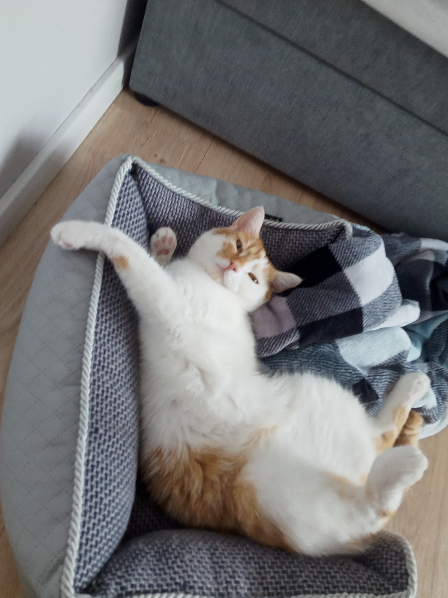
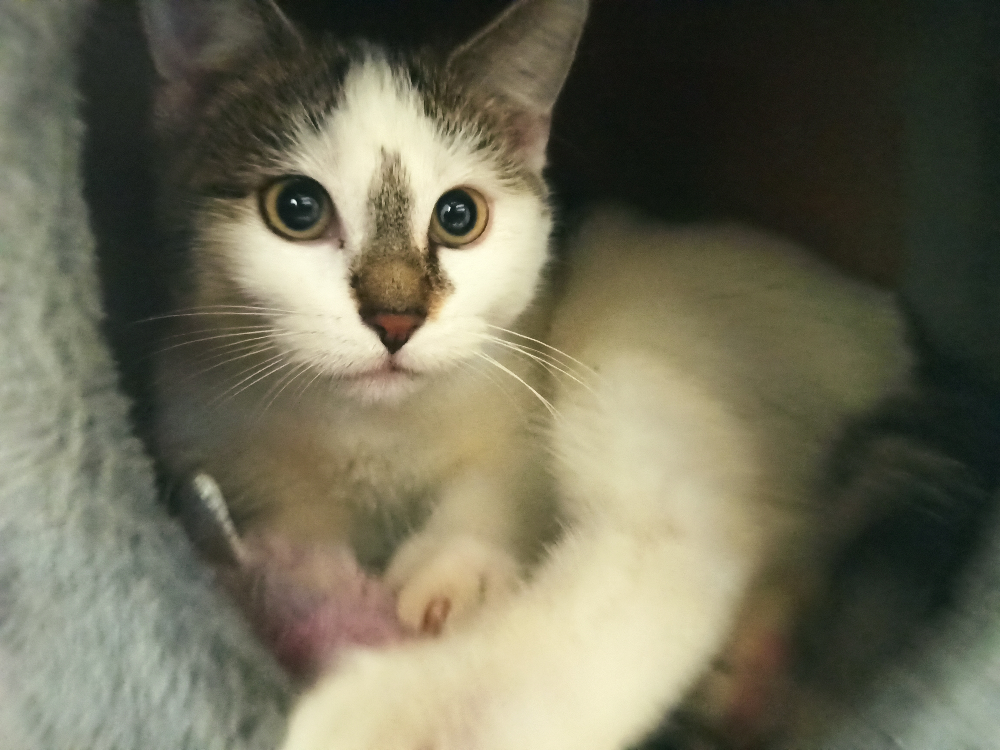

Zwierzaki Antoniego
Nuka - Nuka to lojalna psinka, z której z aktywnego psa zrobiliśmy kanapowca.
Dni lubi spędzać w domu, okazjonalnie wychodząc na ogród lub na spacer.
Uwielbia wygrzewać się na słońcu, oraz jeść wszystko poza karmą.
Urodzona w Październiku 2015 roku.


Świętej Pamięci Kitek - Kitek (formalnie Biszkopt) to rudy kotek.
Był on bardzo haryzmatyczny, tulił się do mnie i przychodił do łóżka.
Był kotem moich marzeń. Niestety pewnego poranka rutynowo wyszedł z domu i już nie wrócił. R.I.P.

Percik - Kotek znaleziony na ulicy w Jastrowiu. Został przez nas przygarnięty.
Bardzo różni się od Kitka, lecz również jest przez nas kochany.
Żeby historia Kitka się nie powtórzyła zakłada on na szyję GPS.

Powrót